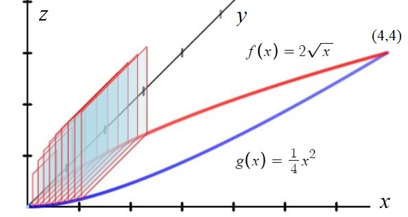
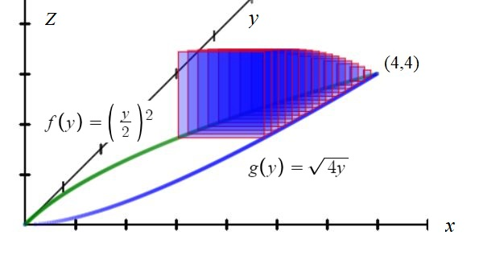
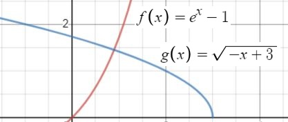
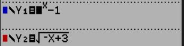
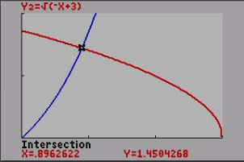
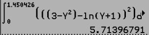

Objective: Find the volume of the 3D shaped that would be created if you stacked a bunch of 2D geometric shapes (rectangles, triangles, etc.) end to end bounded on the ground by 2 functions.
Big Idea: Find the area of 1 shape, then integrate over the bounds to find the Volume.
Square:
=
Triangle:
=
Semi-Circle:
=
π =
π

In the previous section we considered this example with squares ⊥ to the X-Axis. What would change if we built the squares ⊥ to the Y-Axis?
First: Solve both equations for x.
Second: Integrate with respect to y.

Example: What is the volume of the solid whose base is bounded by f(x) = 2
and g(x) = y2 and whose cross sections are squares ⊥ to the Y-Axis?.
Soving for x:
f: y = 2 becomes x = ( )2 so f(y) = ( )2
g: y = x2 becomes x= so g(y) =
In the picture you can see the base of the solid is
formed by f(y) and g(y). The distance between them at any point [ f(y) − g(y) ]
along the graph is the width of each square. (And also the height since it IS a square)
Therefore the area of each square Asquare = [ f(y) − g(y) ]2 and the volume of the solid build by those squares is: V = = = 5.333 u3(Verify this)
General Process:
Find your bounds. Set f(x)=g(x) and find all point(s) of intersection.
Solve each equation for x.
Determine which equation is bigger (farthest right).
Pick the appropriate Area formula and use [f(y) − g(y)] or [g(y) − f(y)] as your base (and potentialy your height)
Your Turn:
Problem 1:

Let f and g be the functions defined on the left.
Find the volume of the solid bounded by f(x) and g(x) and with cross-sections that are squares perpendicular to the y-axis.
Just like Problem 3 in the last section, you will need to solve f(x) and g(x) for x and integrate with respect to y.
(Don't forget to )
Step 1
()
Let (A,B)=(,)


Step 2
()
Let q(y) = ( + ) (Solve f(x) for x)
Remember you are solving for x which means there will only be "y" in the result.
Step 3
()
Let r(y) = − (Solve g(x) for x)
Remember you are solving for x which means there will only be "y" in the result.
Step 4
()
Asquare = [(x) − (x)]
Area of square is [f(x)−g(x)]2.
Step 5
()
=
The bounds are from 0 to B because you are integrating with respect to Y.
